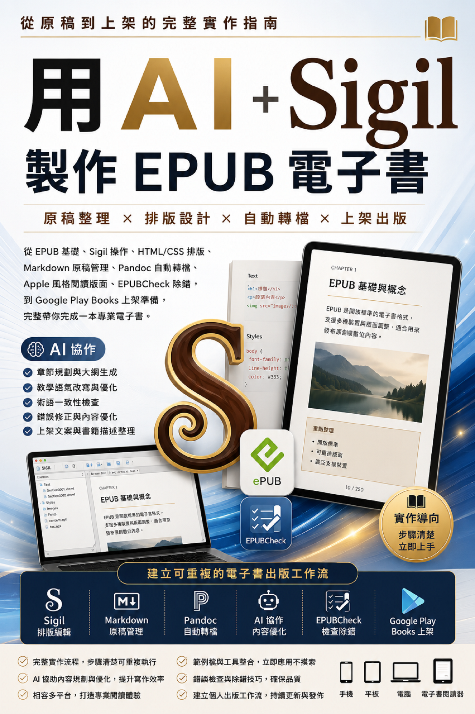

電子書
用 AI + Sigil 製作 EPUB 電子書
Make EPUB eBooks with AI + Sigil

用 AI + Sigil 製作 EPUB 電子書
Make EPUB eBooks with AI + Sigil
實作導向的 EPUB 電子書製作指南。從 Sigil 安裝、EPUB 內部結構、HTML/CSS 排版、Pandoc 自動轉檔，到 EPUBCheck 除錯與 電子書 上架，並示範如何運用 AI 協助章節規劃、文字改寫與校對，建立可持續維護的出版流程。
作品介紹；目前未提供購買或試閱入口